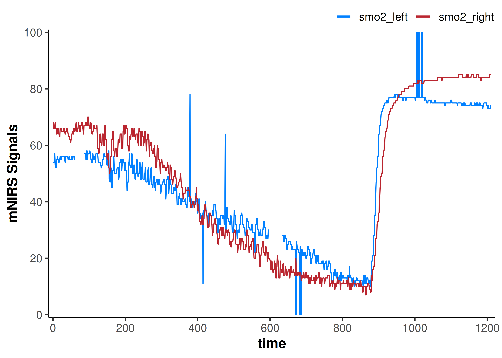
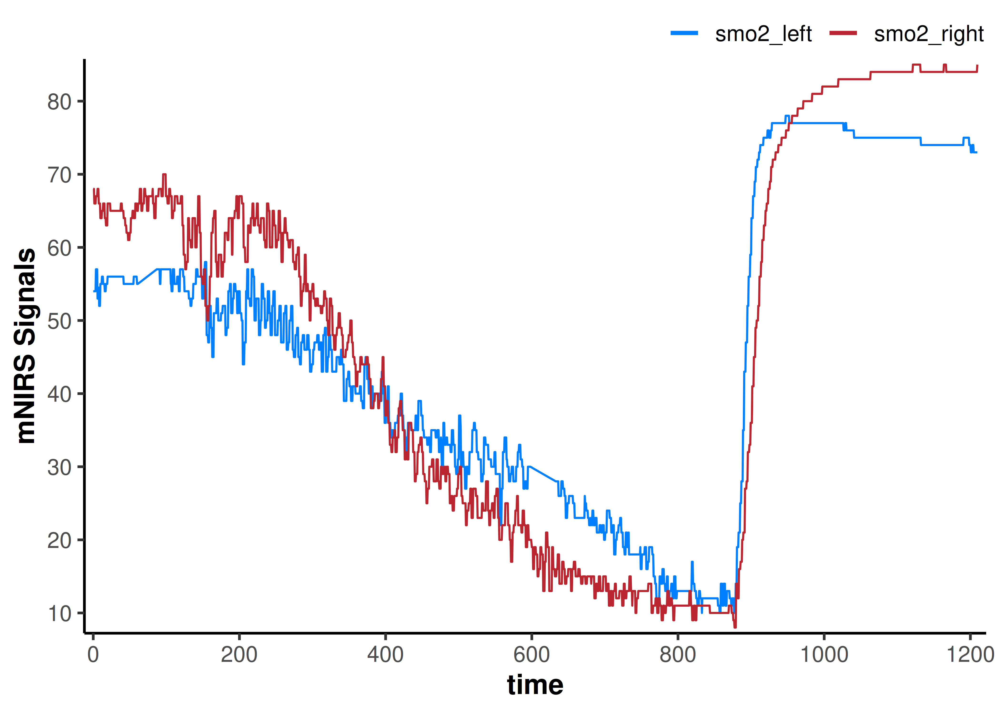
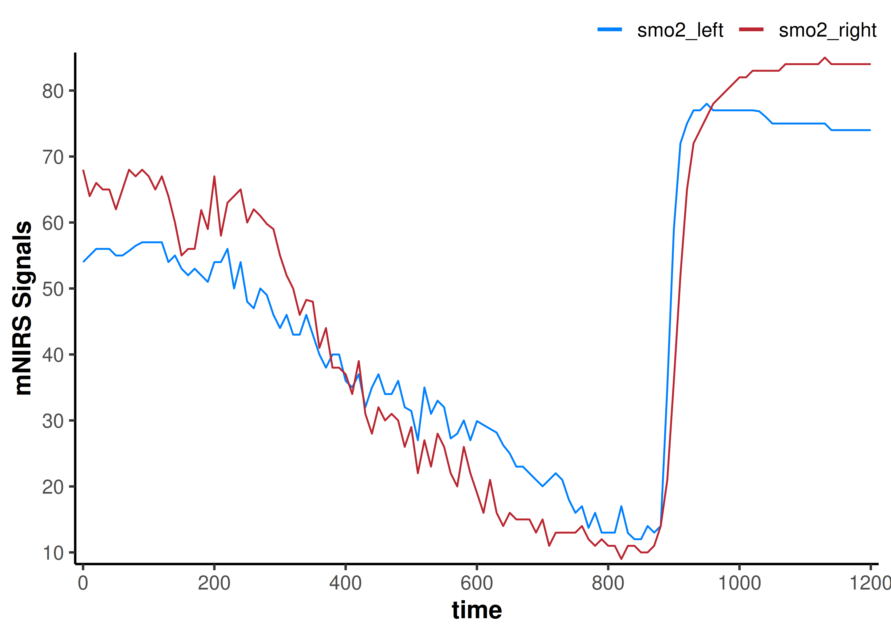
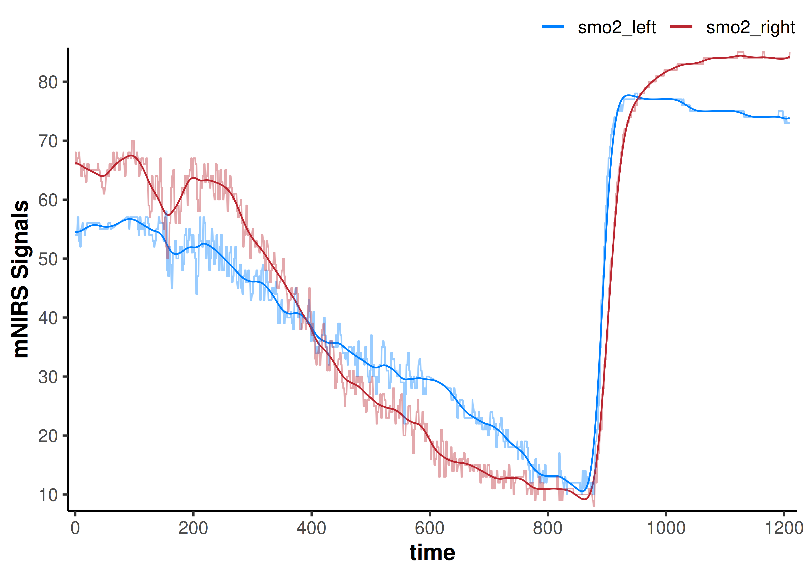
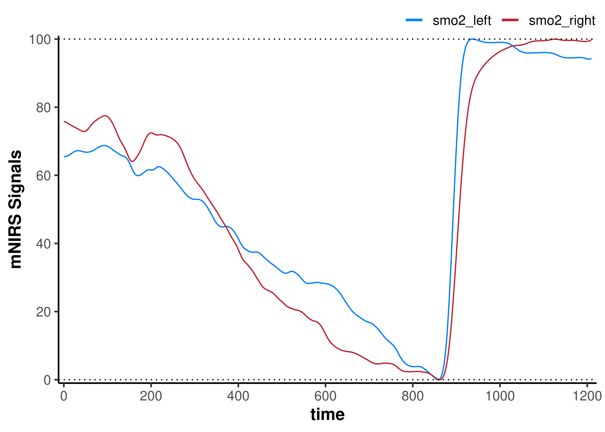
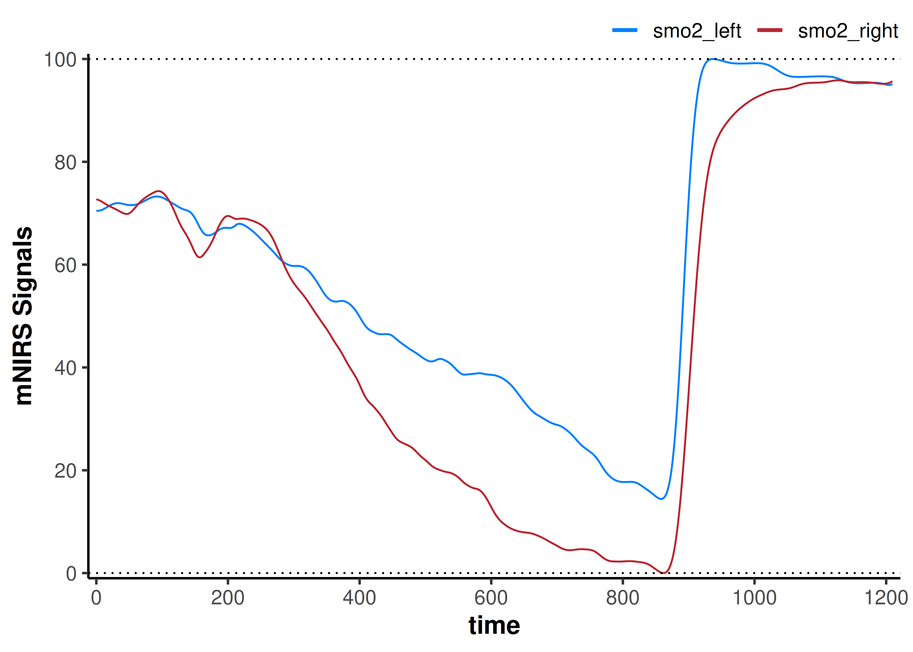

Read Data From File
We will read an example data file with two NIRS channels, recording an incremental ramp cycling assessment. A few example NIRS data files are included in the mnirs package.
First, we load in the mnirs package and any other required libraries. mnirs can be installed with devtools::install_github("jemarnold/mnirs").
Specify file path
-
file_path: We need to specify the file path to read from. e.g.r("C:\myfolder\mnirs_file.xlsx").
We will read in the file_path to the included example data file.
file_path <- system.file("extdata/moxy_ramp_example.xlsx", package = "mnirs")Now we can read the data file with the read_data() function. This function will take in raw NIRS data exported from a device, and return a dataframe with the data channels we specify. See ?read_data for more details.
Specify channel names
We need to tell the function what channel names to look for, to identify our data table in the file. The data table may not be at the very top of the file, so these column names can be anywhere in the file.
nirs_channels: At minimum, we need one channel name defined for NIRS data.sample_channel: Typically, we will also specify a channel for the time or sample number of each observation.event_channel: We can specify a channel to indicate laps or specific events in the dataset.
These names should be in quotations and exactly match the column headers in the file (case- and special character-sensitive). Multiple columns can be accepted for nirs_channels. We can rename these columns when importing our data in the format:
nirs_channels = c(new_name1 = "file_column_name1",
new_name2 = "file_column_name2")Other read_data() options
sample_rate: The sample rate of the NIRS recording can be specified if known, as number of samples per second, in Hz. If left blank, the function will estimate the sample rate fromsample_channel, assuming it contains time values.time_to_numeric: Ifsample_channelis in a date-time format (e.g.hh:mm:ss), we can convert this to numeric withnumeric_time = TRUE. The numeric time values will be re-sampled to start from zero.time_from_zero: If thesample_channelbegins at a non-zero numeric value, it can be re-sampled to start from zero by usingtime_from_zero = TRUE.keep_all: Once the data table in the file is identified, the default is to return only the column names explicitly specified above. If we want to return all columns in the data table, we can setkeep_all = TRUE.verbose: Finally, the function may return warnings or messages, for example if there are duplicate values insample_channelwhich may indicate a recording issue. These informative messages can be useful for data validation, but can be silenced withverbose = TRUE. Fail-state errors will always be returned.
data_raw <- read_data(file_path,
nirs_channels = c(smo2_left = "SmO2 Live",
smo2_right = "SmO2 Live(2)"),
sample_channel = c(time = "hh:mm:ss"),
event_channel = c(lap = "Lap"),
sample_rate = 2, ## we know this file is recorded at 2 samples per second
time_to_numeric = TRUE, ## to convert the date-time string to numeric
keep_all = FALSE, ## to keep the returned dataframe clean
verbose = TRUE) ## show warnings & messages, but ignore them for now
#> Warning: `sample_channel = time` has non-sequential or repeating values. Consider using
#> `resample_data()`.
#> ℹ Investigate at "time = 211.99, 211.99, 211.99, 1184, and 1184".
## ignore the Warning about repeated samples here
data_raw
#> # A tibble: 2,203 × 4
#> time lap smo2_left smo2_right
#> <dbl> <dbl> <dbl> <dbl>
#> 1 0 1 54 68
#> 2 0.4 1 54 68
#> 3 0.96 1 54 68
#> 4 1.51 1 54 66
#> 5 2.06 1 54 66
#> 6 2.61 1 54 66
#> 7 3.16 1 54 66
#> 8 3.71 1 57 67
#> 9 4.26 1 57 67
#> 10 4.81 1 57 67
#> # ℹ 2,193 more rows
## {mnirs} data can be plotted with a built in call to `plot()`
plot(data_raw)
Metadata stored in mnirs.data dataframes
Dataframes read or processed by mnirs functions will return class = mnirs.data and contain metadata, which can be retrieved with attributes(data).
Instead of re-defining our channel names or sample rate, we can call them from the metadata. Some mnirs functions will automatically retrieve metadata if present.
nirs_channels <- attributes(data_raw)$nirs_channels
nirs_channels
#> [1] "smo2_left" "smo2_right"
sample_rate <- attributes(data_raw)$sample_rate
sample_rate
#> [1] 2Replace Outliers, invalid Values, and Missing Values
We can see some errors in the data signals, so let’s clean those up.
We can do some simple data wrangling steps to clean the invalid data and prepare it for digital filtering and smoothing.
-
x: These threereplace_*functions work on vector data; they take in a single data channel (x), apply processing to that channel, and return a vector of the processed channel data.
replace_outliers()
We can identify local outliers using a Hampel filter and replace them with the local median value. See ?replace_outliers for details.
width: The number of samples (window) in which to detect local outliers. To define the window in seconds, multiply the desired number of seconds by the sample rate.t0: The number of standard deviations outside of which are detected as outliers, defaulting to 3 (Pearson’s rule).na.rm: ATRUE/FALSEvalue indicating whether missing values (NA) should be ignored before the Hampel filter is applied.return: Indicates whether outliers should be replaced by the local “median” value or by “NA”.
Note that with relatively low sample rates, such as this 2 Hz file, outlier filters may occasionally over-filter and ‘flatten’ sections of the data. This is observed in this example near the end of the file, were the data trend is quite flat already.
replace_invalid()
Some NIRS devices or recording software can report specific invalid values, such as c(0, 100, 102.3). These can be manually removed with replace_invalid(). See ?replace_invalid for details.
values: A vector of numeric values to be replaced.width: The number of samples (window) in which the local median will be calculated. To define the window in seconds, multiply the desired number of seconds by the sample rate.return: Indicates whether invalid values should be replaced by the local “median” value or by “NA”.
replace_missing()
Finally, We can use replace_missing() to interpolate across missing data. Other fill methods are available, see ?replace_missing for details.
method: Specify the method for filling missing data. The default “linear” interpolation is usually sufficient.na.rm: ATRUE/FALSEvalue indicating when leading or trailingNAs remain after processing, should they be included or omitted.maxgap: Specify the maximum number of consecutiveNAs to fill. Any longer gaps will be left unchanged.
Subsequent processing & analysis steps may return errors when missing values are present. Therefore, it is a good habit to identify and deal with them early during data processing.
data_cleaned <- data_raw |>
mutate(
across(any_of(nirs_channels), ## apply function across all of our `nirs_channels`
\(.x) replace_outliers(x = .x,
width = 15, ## 15 sample window to each side of `x`
na.rm = TRUE, ## ignore `NA`
return = "median")
),
across(any_of(nirs_channels),
\(.x) replace_invalid(x = .x,
values = c(0, 100), ## known invalid values
width = 15,
return = "NA")
),
across(any_of(nirs_channels),
\(.x) replace_missing(x = .x,
method = "linear", ## linear interpolation
na.rm = FALSE, ## to preserve the length of the vector
maxgap = Inf) ## interpolate across gaps of any length
),
)
plot(data_cleaned)
That got rid of all the obvious data issues.
Resample Data
Say we are interested in phenomena occurring on a time scale of 5-minutes, and we have NIRS data recorded at 50 Hz, but something like power data recorded at only 1 Hz. It may be easier to synchronise our data and faster to work with fewer samples if we down-sample the NIRS data also to 1 Hz.
Alternatively, if we have something like high-frequency EMG data and we want to up-sample our NIRS data, we can do that. Although, we should be cautious with up-sampling as this can artificially inflate our confidence with certain modelling or processing methods.
resample_data() options
data: This function works on a dataframe; it will take in a dataframe (data), apply the processing step to all data channels, and return the processed dataframe.sample_channel: If the dataframe already has mnirs.data metadata, the time or sample channel will be detected automatically. Otherwise, we can define or overwrite it explicitly.sample_rate: If the dataframe already has mnirs.data metadata, the sample_rate will be detected automatically. Otherwise, we can define or overwrite it explicitly.resample_rate: Specify the output sample rate we want to covert to, as a number of samples per second (Hz).resample_time: Alternatively, we can specify the output as a number of seconds per sample to produce the same result.
This example dataset is already at relatively low sample rate, but let’s just see what it looks like if for some reason we wanted to down-sample further to 0.1 Hz (1 sample every 10 sec).
data_downsampled <- data_cleaned |>
resample_data(sample_channel = NULL, ## will be automatically read from metadata
sample_rate = NULL, ## will be automatically read from metadata
resample_time = 10, ## equal to `resample_rate = 0.1`
na.rm = TRUE) ## interpolate across missing data appropriately
#> ℹ `sample_rate` = 2 Hz.
#> ℹ Output is resampled at 0.1 Hz.
data_downsampled
#> # A tibble: 121 × 4
#> time lap smo2_left smo2_right
#> <dbl> <dbl> <dbl> <dbl>
#> 1 0 1 54 68
#> 2 10 1 55 64
#> 3 20 1 56 66
#> 4 30 1 56 65
#> 5 40 1 56 65
#> 6 50 1 55 62
#> 7 60 1 55 65
#> 8 70 1 55.7 68
#> 9 80 1 56.5 67
#> 10 90 1 57 68
#> # ℹ 111 more rows
plot(data_downsampled)
The data channels certainly look smoother. This is kind of like we have taken a 10-second moving average of the data, but we have lost information by decreasing the number of samples. Our dataframe now has only 121 rows, compared to the original 2203 rows.
Digital Filtering
If we want more precise control to improve our signal-to-noise ratio in our dataset without losing information, we should apply digital filtering to smooth the data.
Choosing a digital filter
There are a few digital filtering methods available. Which option is best will depend in large part on the sample rate of the data and the frequency of the phenomena being observed.
Choosing filter parameters is an important processing step to improve signal-to-noise ratio and enhance our subsequent interpretations. Over-filtering the data can introduce data artefacts which can influence the signal analysis just as much as the original noisy signal.
It is perfectly valid to choose a digital filter by empirically testing iterative filter parameters until the signal or phenomena of interest is optimised for signal-to-noise ratio and minimal data artefacts.
The process of choosing a digital filter will be the topic of another vignette <currently under development>.
filter_data() methods
-
x: This function works on vector data; it takes in a single data channel (x), applies processing to that channel, and returns a vector of the processed channel data.
Smoothing-spline
-
method = "smooth-spline": A non-parametric smoothing spline is often quite good as a first pass filter when first examining the data. This can often be good enough for longer time-scale phenomena, such as a 5-minute exercise interval, or an intervention with a gradual response curve. For faster occurring or repeated (square-wave) responses, a smoothing-spline may not be appropriate.
Butterworth digital filter
-
method = "butterworth": A Butterworth low-pass digital filter is probably the most common method used in mNIRS research (whether appropriately, or not). For certain applications, such as identifying a signal with a known frequency, such as cycling/running cadence or heart rate, a pass-band or a different filter type may be better suited.
Moving average
-
method = "moving-average": The simplest smoothing method is a simple moving average applied over a specified number of samples. Commonly, this might be a 5- or 15-second centred moving average filter.
Apply the filter
Let’s try a Butterworth low-pass filter, and we’ll specify some empirically chosen filter parameters. See ?filter_data for further details on each of these filtering methods and their respective parameters.
data_filtered <- data_cleaned |>
mutate(
across(any_of(nirs_channels),
\(.x) filter_data(x = .x,
method = "butterworth",
type = "low",
n = 2, ## see ?filter_data for details on filter parameters
W = 0.02)
)
)
## we will add the non-filtered data back to the plot to compare
plot(data_filtered) +
geom_line(data = data_cleaned,
aes(y = smo2_left, colour = "smo2_left"), alpha = 0.4) +
geom_line(data = data_cleaned,
aes(y = smo2_right, colour = "smo2_right"), alpha = 0.4)
Shift and Rescale Data
We may need to adjust our data to normalise NIRS signal values across channels, or between individuals or trials, etc. For example, we may want to set our mean baseline value to zero for all NIRS signals. Or we may want to compare signal kinetics (the rate of change or time course of a response) after rescaling to the same relative dynamic range.
These functions allow us to either shift values and preserve the dynamic range (the delta amplitude from minimum to maximum values) of our NIRS channels, or rescale the data to a new dynamic range.
We can do this on multiple NIRS channels and either modify or preserve the relative scaling between those channels.
shift_data() options
We may want to shift our data values while preserving the absolute dynamic range. See ?shift_data for details.
data: This function works on a dataframe; it will take in a dataframe (data), apply the processing step to all data channels, and return the processed dataframe.nirs_channels: A list specifying how we want the NIRS data channels to be grouped, to preserve within-group relative scaling. Listing each channel separately (e.g.list("A", "B", "C")) will shift each channel independently. The relative scaling between channels will be lost.
Grouping channels (e.g.list(c("A", "B"), c("C"))) will shift each group of channels together. The relative scaling between channels will be preserved within each group, but lost across groups.
If the dataframe already has mnirs.data metadata, the NIRS data channels will be detected automatically and processed as if grouped globally together.shift_to: The NIRS value to which the channels will be shifted.position: Specifies how we want to shift the data; either shifting the “minimum”, “maximum”, or “first” sample(s) to the value specified above.mean_samples: Specifies how many samples we want to average across when shifting to our new value specified above. The defaultmean_samples = 1will shift a single value.shift_by: An alternate way to specify, if we wanted to shift a data channel by, say 10 units.
We have a 2-minute baseline for this dataset, so maybe we want to shift both NIRS signals so that the mean value of the 2-min baseline is equal to zero.
data_shifted <- data_filtered |>
## convert `nirs_channels` to separate list items to shift each channel separately
shift_data(nirs_channels = as.list(nirs_channels),
sample_channel = NULL, ## we can leave this null since `sample_channel` is in our metadata
shift_to = 0,
position = "first",
span = 120) ## shift the mean of the first 120 sec of data to zero
plot(data_shifted) +
geom_hline(yintercept = 0, linetype = "dotted")Now our interpretation may change; if we are assuming the baseline represents the same starting condition, our smo2_left signal does not deoxygenate as far as our smo2_right signal.
rescale_data() options
We may want to rescale our data to a new dynamic range. See ?rescale_data for details.
data: This function works on a dataframe; it will take in a dataframe (data), apply the processing step to all data channels, and return the processed dataframe.nirs_channels: A list specifying how we want the NIRS data channels to be grouped, to preserve within-group relative scaling (see Shift Data above).rescale_range: Specifies the new dynamic range, in the formc(minimum, maximum).
For example, if we are interested in comparing the ‘functional range’ of each NIRS signal, we may want to set them both to 0-100%.
data_rescaled <- data_filtered |>
## convert `nirs_channels` vector to separate list items to shift each channel separately
rescale_data(nirs_channels = as.list(nirs_channels),
rescale_range = c(0, 100)) ## rescale to a 0-100% functional exercise range
plot(data_rescaled) +
geom_hline(yintercept = c(0, 100), linetype = "dotted")
Here, our interpretation may be that smo2_left appears to deoxygenate slower to it’s fullest extent during incremental exercise, and reoxygenate faster compared to smo2_right.
Combined shift and rescale
What if we wanted to shift both NIRS signals so their mean 120-sec baselines are equal, then rescale the dynamic range of both signals grouped, such that the highest and lowest values were from 0 to 100?
data_rescaled <- data_filtered |>
## the lowest single value for each NIRS channel will be shifted to zero
shift_data(nirs_channels = as.list(nirs_channels),
shift_to = 0,
position = "first",
span = 120) |>
## Then both channels will be grouped and the maximum value of the two scaled to 100%
rescale_data(nirs_channels = list(nirs_channels),
rescale_range = c(0, 100))
plot(data_rescaled) +
geom_hline(yintercept = c(0, 100), linetype = "dotted")
Now our interpretation might be that assuming the same starting baseline condition in both tissues, smo2_left preserves greater relative oxygenation during exercise and immediate recovery compared to smo2_right.